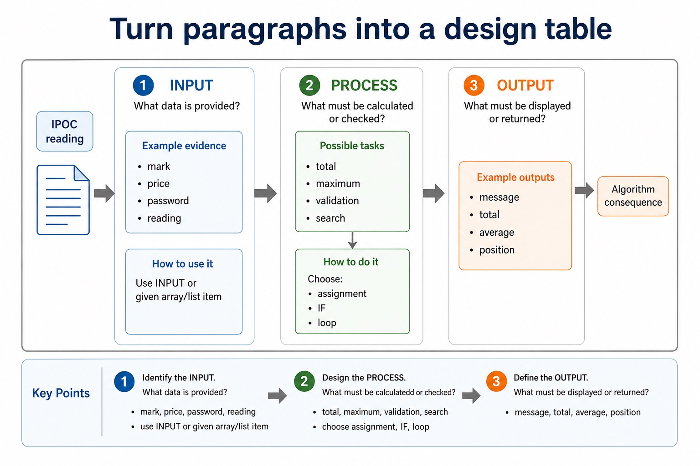
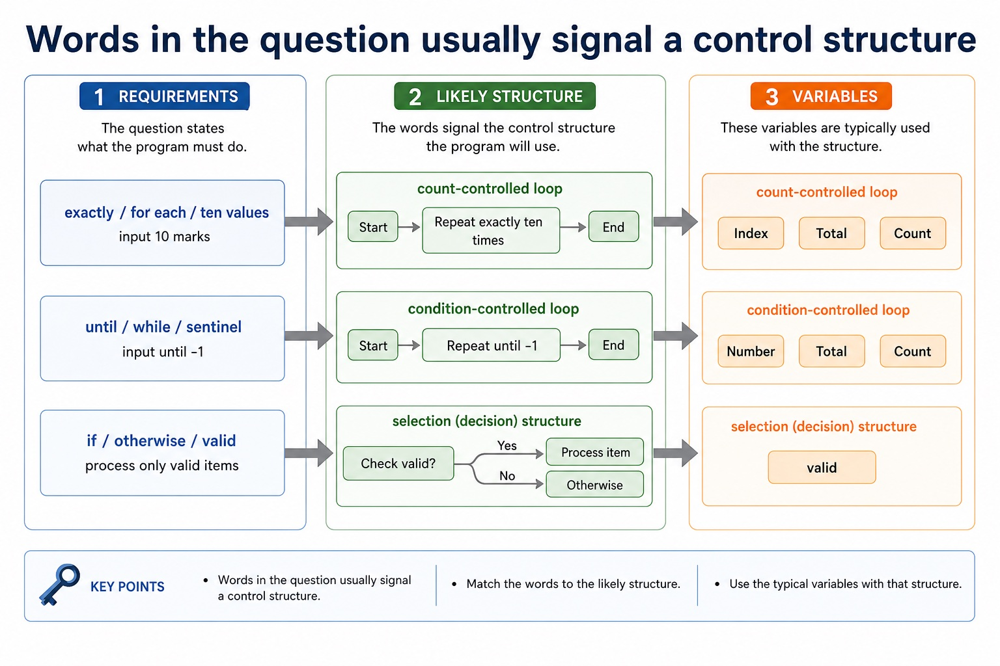
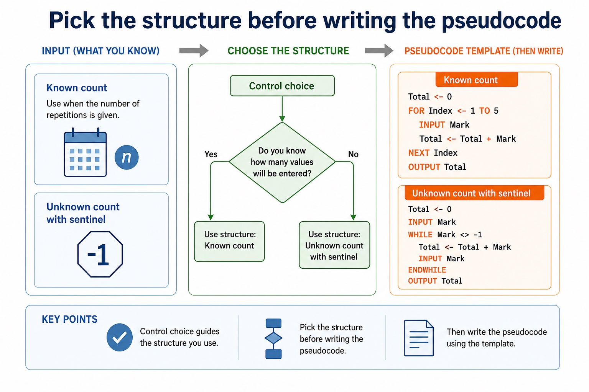
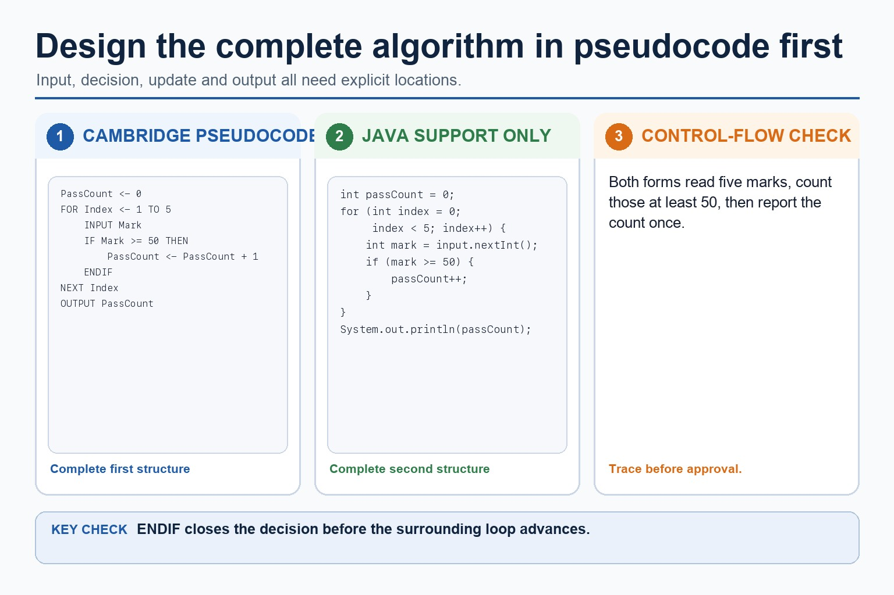

Word problems are not stories. They are algorithms wearing paragraphs.
A Paper 2 word problem hides the algorithm in plain sight. Your job is to extract the inputs, processing,
outputs and constraints, then choose sequence, selection and iteration carefully. Today you will convert
scenarios into clear Cambridge-style pseudocode with traceable variables.
Extractinputs, outputs, constraints and stopping conditions from a scenario
Designsteps using sequence, selection and iteration before writing code
Verifywith trace tables and normal, boundary and erroneous test data
ScenarioInput marks until -1. Output total, count and average.
InputProcessOutputConstraints
Algorithm shapeInitialise -> WHILE not sentinel -> update -> output after loop
Read for structure first. The pseudocode comes after the thinking.
Why this matters
Exam questions often award separate marks for input, initialisation, loop control, selection, update and final output.
Common trap
Do not start coding from the first sentence. Start from the required output, then work backward to the needed inputs and variables.
Warm-up hook
What is the required output?
A question says: "Input five scores and display the highest score." Which item must the algorithm output?
Choose the value explicitly requested by the question.
IPOC reading
Turn paragraphs into a design table
Part
Question to ask
Example evidence
Algorithm consequence
Input
What data is provided?
mark, price, password, reading
use INPUT or given array/list item
Process
What must be calculated or checked?
total, maximum, validation, search
choose assignment, IF, loop
Output
What must be displayed or returned?
message, total, average, position
place OUTPUT after correct processing
Constraints
What limits or rules are stated?
exactly 5, until -1, range 0-100
choose FOR, WHILE, validation or boundary tests
Chinese support: IPOC = Input, Process, Output, Constraints；约束条件决定循环和验证方式。
Turn paragraphs into a design table

Turn paragraphs into a design table: source-grounded visual explanation.
Lesson fact: IPOC reading
Lesson fact: Question to ask
Lesson fact: Example evidence
Lesson fact: Algorithm consequence
Lesson fact: What data is provided?
Lesson fact: mark, price, password, reading
Lesson fact: use INPUT or given array/list item
Lesson fact: What must be calculated or checked?
Lesson fact: total, maximum, validation, search
Lesson fact: choose assignment, IF, loop
Lesson fact: What must be displayed or returned?
Lesson fact: message, total, average, position
Requirements
Words in the question usually signal a control structure
Wording
Likely structure
Variables
Example
exactly / for each / ten values
count-controlled loop
`Index`, `Total`, `Count`
input 10 marks
until / while / sentinel
condition-controlled loop
`Number`, `Total`, `Count`
input until -1
if / otherwise / valid
selection
`Valid`, `Message`
if mark is between 0 and 100
highest / lowest / contains
running comparison or search
`Maximum`, `Minimum`, `Found`
find highest reading
Words in the question usually signal a control structure

Words in the question usually signal a control structure: source-grounded visual explanation.
Lesson fact: Requirements
Lesson fact: Likely structure
Lesson fact: Variables
Lesson fact: exactly / for each / ten values
Lesson fact: count-controlled loop
Lesson fact: Index, Total, Count
Lesson fact: input 10 marks
Lesson fact: until / while / sentinel
Lesson fact: condition-controlled loop
Lesson fact: Number, Total, Count
Lesson fact: input until -1
Lesson fact: if / otherwise / valid
Control choice
Pick the structure before writing the pseudocode
Known count
Total <- 0
FOR Index <- 1 TO 5
INPUT Mark
Total <- Total + Mark
NEXT Index
OUTPUT Total
Use when the number of repetitions is given.
Unknown count with sentinel
Total <- 0
INPUT Mark
WHILE Mark <> -1
Total <- Total + Mark
INPUT Mark
ENDWHILE
OUTPUT Total
Use when input continues until a stopping value appears.
Pick the structure before writing the pseudocode

Pick the structure before writing the pseudocode: source-grounded visual explanation.
Lesson fact: Control choice
Lesson fact: Known count
Lesson fact: Total <- 0
Lesson fact: FOR Index <- 1 TO 5
Lesson fact: INPUT Mark
Lesson fact: Total <- Total + Mark
Lesson fact: NEXT Index
Lesson fact: OUTPUT Total
Lesson fact: Use when the number of repetitions is given.
Lesson fact: Unknown count with sentinel
Lesson fact: WHILE Mark <> -1
Lesson fact: ENDWHILE
Trace and tests
A design is not finished until it survives a trace
Trace focus
For inputs 40, 70, -1 with sentinel -1, Total should become 40 then 110. The sentinel must not be added.
Design in Cambridge pseudocode first; use Java only to support testing
Cambridge-style answer
PassCount <- 0
FOR Index <- 1 TO 5
INPUT Mark
IF Mark >= 50 THEN
PassCount <- PassCount + 1
ENDIF
NEXT Index
OUTPUT PassCount
Java support only
int passCount = 0;
for (int index = 0; index < 5; index++) {
int mark = input.nextInt();
if (mark >= 50) {
passCount++;
}
}
Exam reminder: the Java version can test an idea, but the Paper 2 answer should stay in clear Cambridge-style pseudocode.
Design in Cambridge pseudocode first; use Java only to support testing

Design in Cambridge pseudocode first; use Java only to support testing: source-grounded visual explanation.
Lesson fact: Pseudocode vs Java
Lesson fact: Cambridge-style answer
Lesson fact: PassCount <- 0
Lesson fact: FOR Index <- 1 TO 5
Lesson fact: INPUT Mark
Lesson fact: IF Mark >= 50 THEN
Lesson fact: PassCount <- PassCount + 1
Lesson fact: NEXT Index
Lesson fact: OUTPUT PassCount
Lesson fact: Java support only
Lesson fact: int passCount = 0;
Lesson fact: for (int index = 0; index < 5; index++) {
Interactive scenario analyser
Extract the design before writing pseudocode
Choose a scenario to see the IPOC breakdown.
Extract the design before writing pseudocode
Extract the design before writing pseudocode: source-grounded visual explanation.
Lesson fact: Interactive scenario analyser
Lesson fact: Scenario
Lesson fact: Choose a scenario to see the IPOC breakdown.
Interactive algorithm builder
Choose a scenario and inspect a model answer
Choose a target to show Cambridge-style pseudocode.
Worked examples
From words to pseudocode
Practice with instant checking
Design decisions
Type concise answers. Use Show answer after committing to a response.
Mistake debugging
Fix word-problem design mistakes
Exam-style questions
Original Cambridge-style word-problem questions with expandable MS
These questions target IPOC extraction, loop choice, update placement, sentinel handling and strict pseudocode wording.
Extra practice
Stepwise refinement
Stepwise refinement starts with a high-level task and repeatedly replaces each complex step with smaller, precise substeps. Refinement stops when each step can be implemented directly and its inputs/outputs are clear.
It supports modularity, review and testing because each refinement level preserves the purpose of its parent step. It is not merely adding more prose; each level must reduce ambiguity.
Worked example: Process an order
Level 1: Validate order, calculate total, produce receipt. Refine calculate total into: set Total to 0; for each item validate quantity, add Price * Quantity; apply discount; add tax.
Targeted practice
1. What is the starting point of stepwise refinement?
Show answer
A high-level solution/task.
2. When should refinement stop?
Show answer
When steps are precise enough to implement directly.
3. How does refinement support testing?
Show answer
Smaller modules/steps can be checked independently against defined inputs and outputs.
Exam-style question
4 marks
Apply one level of stepwise refinement to the task 'register a new library member'.
Show MS
B1 captures required member details
B1 validates details / checks existing member
B1 creates and stores a unique member record
B1 outputs confirmation/card or error; steps form a coherent sequence
Summary
Word-problem design checklist
ReadIdentify inputs, processing, outputs and constraints before writing pseudocode.
ChooseMatch wording to sequence, selection, fixed loop or condition-controlled loop.
CheckTrace with test data and confirm the final output matches the scenario.
Homework
Clear tasks for consolidation
Task 1: IPOC tableCreate an IPOC table for: input daily rainfall for 7 days and output the total and average rainfall.Task 2: PseudocodeWrite Cambridge-style pseudocode for the rainfall problem. Include initialisation and final output.Task 3: Trace and testsTrace your algorithm with rainfall values 2, 0, 4, 1, 0, 3, 4 and suggest one boundary or erroneous test.